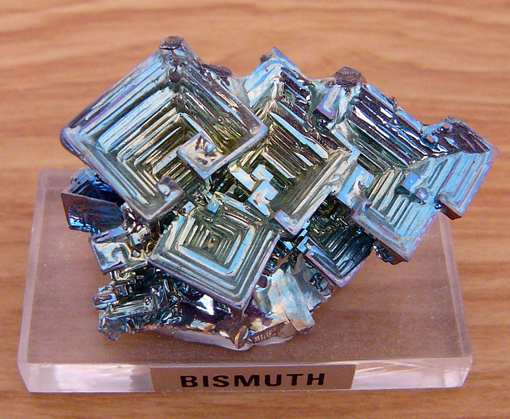
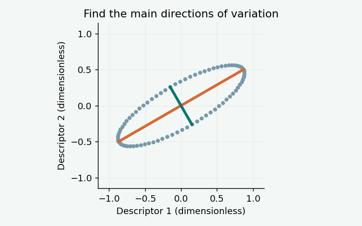
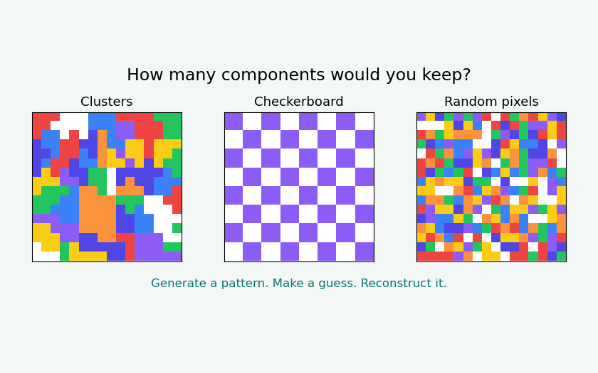
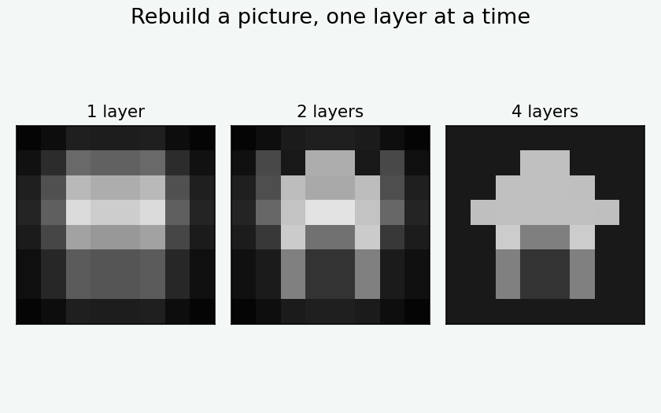
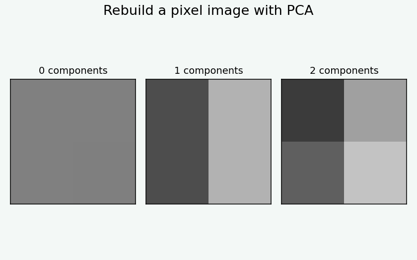
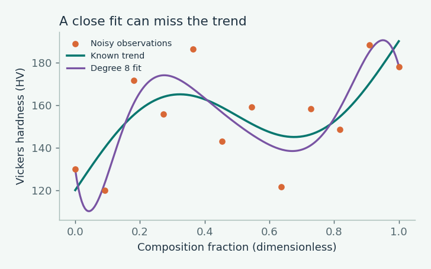
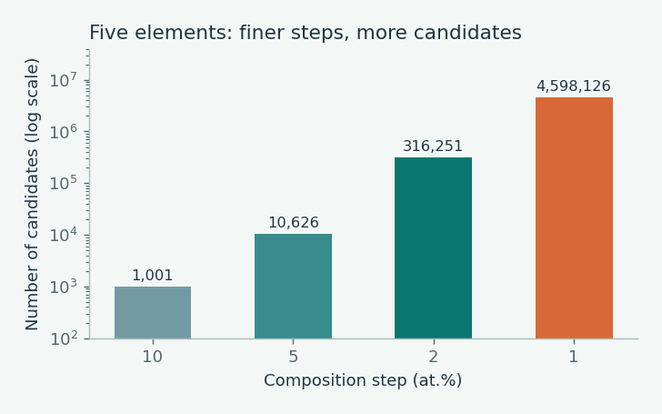

What’s new in materials AI
AI can help us write. Can it help us discover new materials?
Explore how AI could help us choose materials for energy conversion, cooling and a more sustainable future.

What’s new in materials AI
Explore how AI could help us choose materials for energy conversion, cooling and a more sustainable future.

PCA series · Part 1 of four
Begin with five measurements from 300 specimens and see why a simpler picture is useful.

Tutorial
Generate colored patterns, guess the component count, then watch PCA reconstruct the image.

Start here
Build a picture one layer at a time. Start with everyday comparisons, then try the interactive example.

Tutorial
Follow the pixel values through centering, principal components and reconstruction. Run the notebook in small steps.

Machine learning
Change the model and the noise to compare fitting the observations with predicting the underlying trend.

Materials design
Count possible compositions and processing choices with an interactive design-space example.
A place to begin
You do not need to know matrix algebra to begin. See how numbers form a small image, then learn how SVD and PCA describe its patterns.
Why materials data?
Generally, most researchers (experimentalists) conduct innumerable experiments to reach the final target. In this process, we generate tons of data that involves enormous consumption of energy, resources, and, most importantly, time. The whole activity has a direct impact on our climate, too. Therefore, designing and performing relevant experiments by analyzing pre-existing data to predict new or improved materials via materials informatics and analytics is the need of the hour.
What I share here
I will share the codes developed by me and also provide tutorials on how to use publicly available open source codes related to multiscale materials design and informatics.
Click on articles and tutorials to begin your adventure with materials data.
I am Joyita Bhattacharya, PhD, a materials scientist and educator with expertise in microscopy, materials characterization, materials informatics, and machine learning. Through this website, I share tutorials, practical examples, and research-inspired articles that help students, researchers, and engineers apply modern data science techniques to real materials science problems.
Whether you are taking your first steps in materials informatics or looking to deepen your expertise, I hope these resources help you analyze data more effectively, interpret results with greater confidence, and discover new insights from materials datasets. Explore the tutorials to build practical skills, or browse the blog for applications, case studies, and discussions at the intersection of materials science, microscopy, and data analytics.